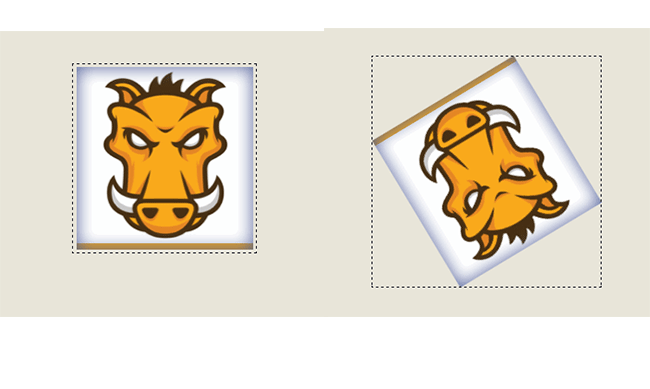
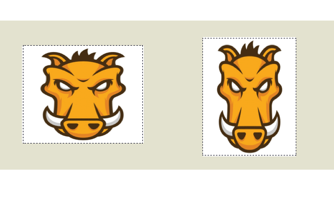
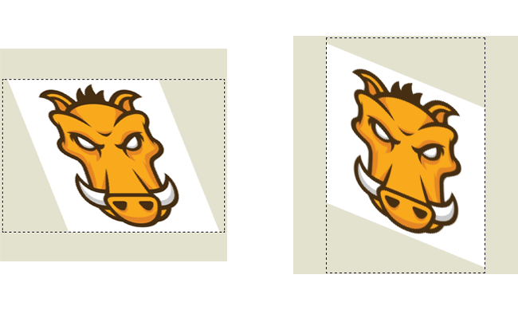

In this tutorial journey of transformation, we will concentrate on transforming properties with CSS code. The CSS transform property allows you to visually manipulate an element by skewing, rotating, or scaling. Using it, elements can be translated, rotated, scaled, and skewed.
Browser compatibility
Rotation
This function rotates the element clockwise from its original position. whilst a negative value would rotate it in the opposite direction. Here’s a simple animated example where a square continues to rotate 360 degrees every three seconds:

scale
The Scale value affects the size of the element. This also applies to the font-size, padding, height, and width of an element, too. It’s also a a shorthand function for the ScaleX and ScaleY functions.

Skew
SkewX and SkewY transform functions tilt an element one way or the other. Remember: there is no shorthand property for skewing an element, so you’ll need to use both functions. In the example below, we can skew a 100px x 100px square to the left and right with skewX:

Try to make transform yourself
Hopefully the above has given you an insight into the wonderful world of CSS transform.
In the next page, we will start to explore CSS-Filter.